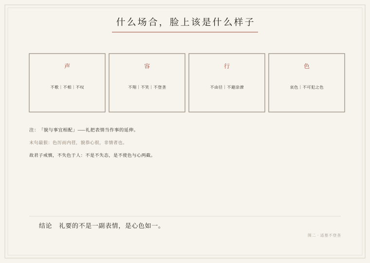

曲礼上 · 一·一百零四 · 第 102 课
往墓地不登坟冢；助葬必执引棺之绳；临丧不笑；揖人必离己位；望柩不歌，入临不翔，当食不叹；邻有丧舂不相，里有殡不巷歌；送丧不由径，送葬不避涂潦；临丧必有哀色，执绋不笑，临乐不叹，介胄则有不可犯之色——故君子戒慎，不失色于人。
说什么事：一节十七句，全在「色」与「声」上。
落在哪一层：仪，兼及礼意。哀乐之色，与事相配。
为何编在此位：上节言施，此节言临丧之容。由施及容。
【经】適墓不登壟，助葬必執紼，臨喪不笑，揖人必違其位。望柩不歌，入臨不翔，當食不嘆。鄰有喪，舂不相；里有殯，不巷歌。適墓不歌，哭日不歌。送喪不由徑，送葬不辟塗潦。臨喪則必有哀色，執紼不笑，臨樂不嘆，介胄則有不可犯之色。故君子戒慎，不失色於人。
【注】為其不敬。壟，塚也。墓，塋域。葬，喪之大事。紼，引車索。臨喪宜有哀色。禮以變為敬。哀傷之無容樂。食或以樂，非嘆所。助哀也。相，謂送杵聲。非樂所。哀未忘也。所哀在此。貌與事宜相配。介，甲也。色厲而內荏，貌恭心很，非情者也。
垄 注「垄，冢也」；墓为茔域。登垄，是踏上坟头。
绋 注「紼，引车索」；疏「绳属棺曰绋，属车曰引，引、绋亦通名」。
违其位 注「礼以变为敬」。疏「当离己位而向彼遥揖」。
翔 张臂而行。入临不翔，是不作舒容。
相 注「相，谓送杵声」。舂米时的和声。
涂潦 道中积水。送葬不避，是所哀在此。
介胄 注「介，甲也」。披甲戴胄，则有不可犯之色。
不失色于人 注「色厉而内荏，貌恭心很，非情者也」。色与心须一。
往墓地不登坟冢；助葬必执引棺之绳；临丧不笑；向人作揖必离己位。望柩不唱歌，入临不张臂而行，进食时不叹气。邻家有丧，舂米不作和声；里中有殡，不在巷中唱歌。往墓地不唱歌，吊丧之日不唱歌。送丧不走小路，送葬不避积水。临丧必有哀色，执绋不笑，临乐不叹，披甲戴胄则有不可侵犯之色。所以君子戒慎，不在人前失了应有的神色。
一节十七句，讲同一件事：什么场合，脸上该是什么样子。注末句最狠——「色厉而内荏，貌恭心很，非情者也」。礼要的不是一副表情，是心色如一。
第一层 声之戒 不歌、不相、不叹。声音最容易泄底，故先禁声。
第二层 容之戒 不翔、不笑、登垄不敬。身之舒展与笑，都在丧侧收起。
第三层 行之戒 不由径、不避涂潦。送丧的路要正、要走得下去。
第四层 色与事配 哀色、不可犯之色，皆「貌与事宜相配」。礼在此把表情当作事的延伸。
第五层 不失色 不是不失态，是不使色与心两截。此句是整节的收束。
与今日何干 医院里不喧笑，葬礼上不拍照发圈，值守时不嬉闹。此节之今形，仍是「看场合」。
| 左 | 右 |
|---|---|
| 适墓不登垄 | 不踏坟冢 |
| 助葬必执绋 | 执引棺之绳，助其事 |
| 揖人必违其位 | 离己位而揖，礼以变为敬 |
| 望柩不歌／入临不翔 | 声与容皆收 |
| 邻丧舂不相／里殡不巷歌 | 助哀 |
| 送丧不由径／不避涂潦 | 路正，行不避险 |
| 介胄有不可犯之色 | 貌与事宜相配 |
| 不失色于人 | 色与心不可两截 |
画墓道一段：左侧坟冢隆起、冢上草未踏、四周留白；右侧送葬之路笔直通向远处，路面有积水一处、辙印直穿而过未绕行；路旁一束引棺之绳盘在地上。不画人、不写文字。赭色只在绳束。
